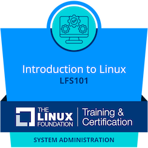
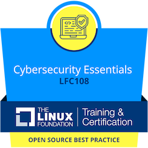

Professional Certifications
-



Hello! I'm Patrick, an enthusiastic entry-level Linux Administrator and AWS Cloud Engineer. I recently completed training with NextWork and earned certifications from The Linux Foundation. I am passionate about managing robust IT infrastructures and developing scalable cloud solutions. My experience includes working with Linux systems, setting up and maintaining LAMP stacks, and leveraging AWS services to build and manage cloud-based solutions. I am particularly interested in optimizing system performance and enhancing security practices. I'm excited about opportunities to apply my skills in Linux system administration and cloud engineering to contribute to innovative and efficient IT solutions. I look forward to continuing my professional development and working on impactful projects.
This project involved setting up a LAMP (Linux, Apache, MySQL, PHP) stack to create a fully functional web server environment. The deployment includes configuring Apache for virtual hosting, securing MySQL databases, and optimizing PHP settings for performance.
Key Features:
Secure Configuration: Ensuring all components are securely configured to prevent unauthorized access and potential vulnerabilities.
Performance Tuning: Optimizing the server settings to enhance performance and handle high traffic loads efficiently.
Backup Solutions: Implementing backup strategies for databases and server files to ensure data integrity and recovery options.
Technologies Used:
Linux: Managing the server environment and performing system administration tasks.
Apache: Configuring and managing the web server.
MySQL: Handling database management and security.
PHP: Developing dynamic web content and server-side scripts.
Objective:
The goal of this project was to demonstrate the ability to deploy and manage a LAMP stack environment, focusing on security, performance, and reliability.
Project Link
This project involved designing and deploying a scalable cloud infrastructure using AWS services. It includes setting up EC2 instances, configuring S3 buckets, and implementing security groups and IAM roles to manage access and resources.
Key Features:
Scalable Architecture: Designing a cloud infrastructure that can scale based on demand, ensuring high availability and performance.
Cost Optimization: Implementing strategies to monitor and manage costs effectively.
Security Measures: Configuring security groups and IAM policies to control access and protect resources.
Technologies Used:
AWS EC2: Deploying and managing virtual servers in the cloud.
AWS S3: Storing and managing data in scalable object storage.
AWS IAM: Managing access and permissions for AWS resources.
Objective:
The objective of this project was to showcase the ability to design and implement a scalable and secure cloud infrastructure using AWS services.
Project Link
Set up a personal Linux server using Ubuntu to host a web application. Configured basic services like SSH, Apache, and MySQL. Gained hands-on experience with Linux command line and file system management.
Created virtual machines using VirtualBox for testing purposes. Explored cloud services by setting up and managing virtual instances on AWS. Technologies included Proxmox, Ubuntu OS, Ubuntu Server, and Parrot OS.
Studied basic networking concepts including TCP/IP, DNS, and DHCP. Practiced setting up and configuring a home network with routers and switches. Gained an understanding of basic security practices and firewall configurations.
Utilized HTML, CSS, and JavaScript to create the front-end of websites. Developed user-friendly and responsive web interfaces to enhance user experiences.